Folia
A family of devices that monitors aromatic plants. It turns the plant’s health into three emotions you can read at a glance.
A family of devices that monitors aromatic plants. It turns the plant’s health into three emotions you can read at a glance.
The goal. Aromatic plants are now a constant presence in our homes, chosen even by people with no gardening skills. Many of those bought in supermarkets do not survive their first two weeks: a gesture of wellbeing turns into an experience of waste. Folia was born to fill this gap, with an intuitive tool that supports everyday care.
What it does. The devices read light, temperature and soil moisture and show the plant’s condition through a simple visual language: three expressions, healthy, at risk, wilted. They do more than collect data: they become quiet companions that encourage a more mindful relationship between people and nature.
Technical features. Inside are a main board with a microcontroller, soil moisture, light and temperature sensors, a small display and a battery. The project is fully engineered, taking every internal component into account.
Contextual renders: Folia in the pot, in the plant’s different states.

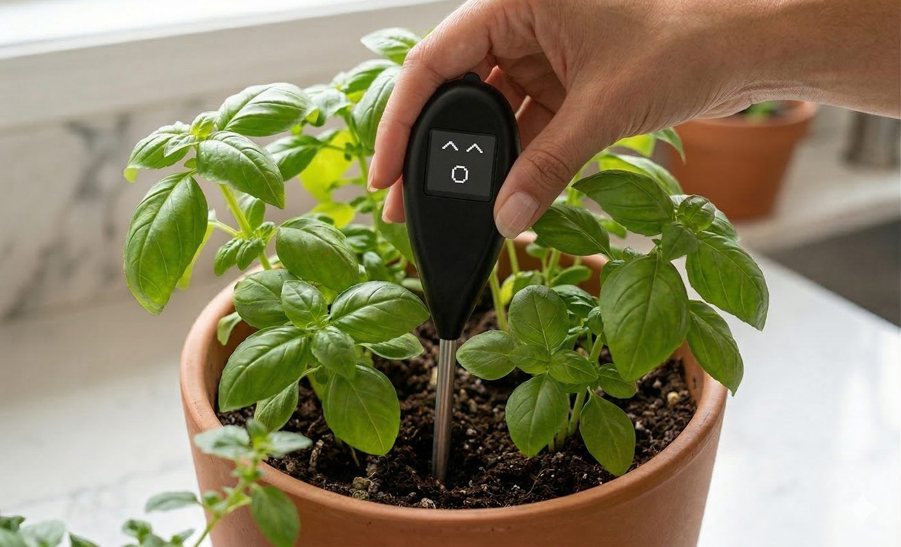

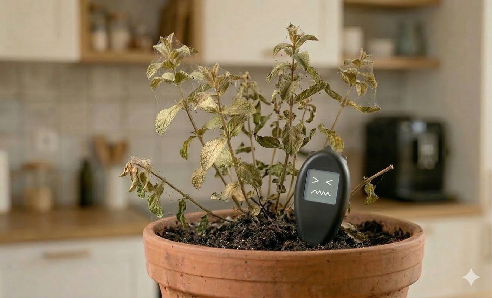

The renders presented at the exam.
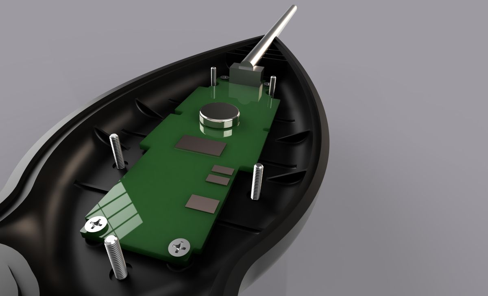

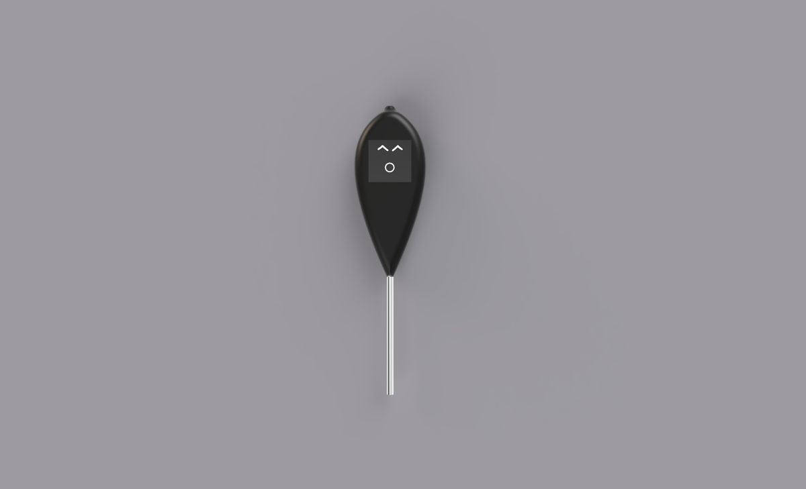
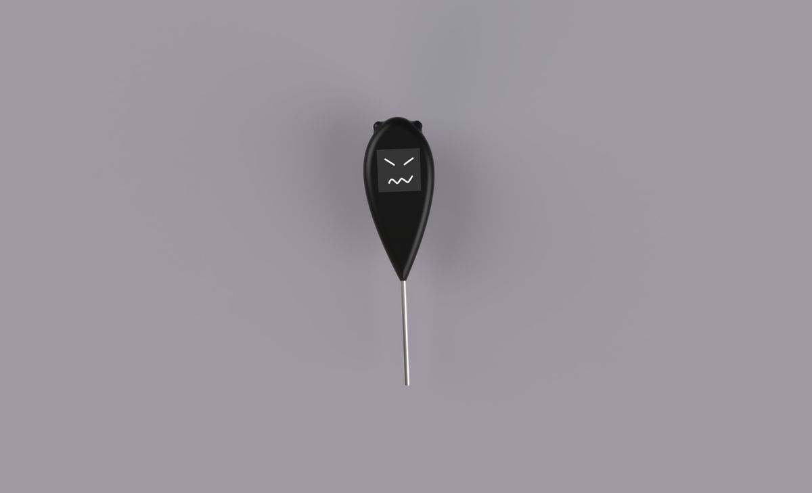

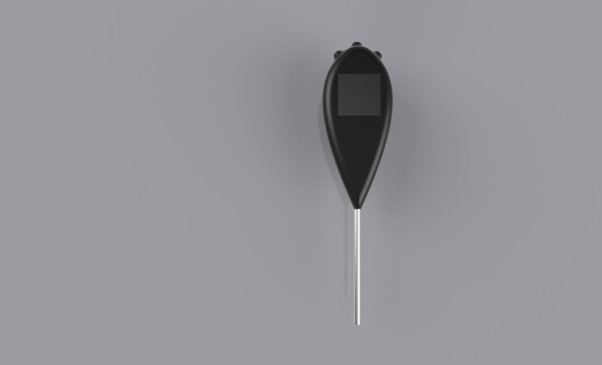
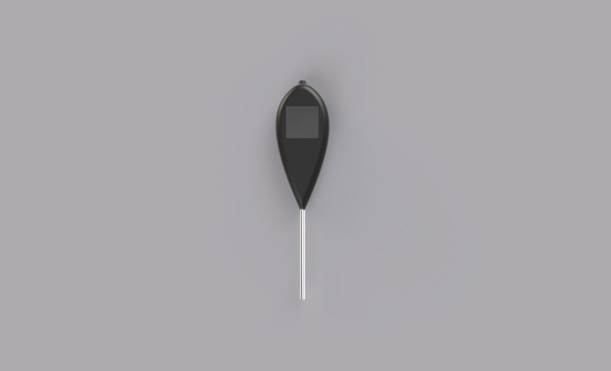
The nine technical boards. Click to enlarge.
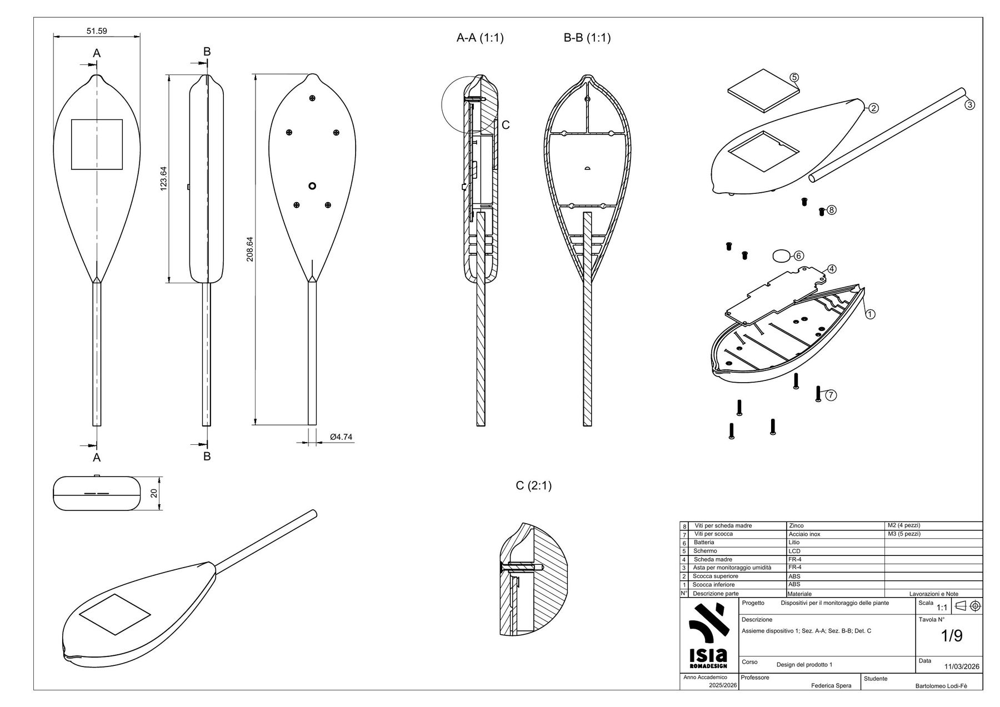


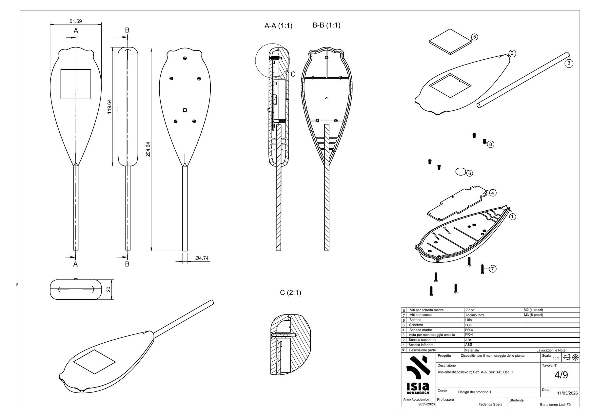
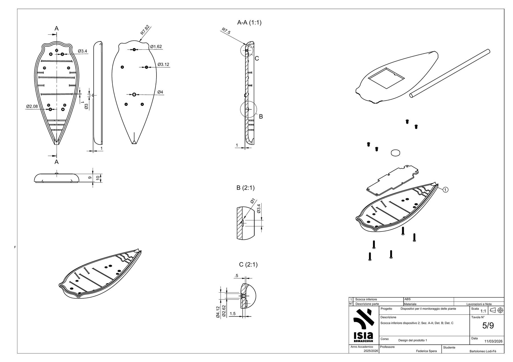
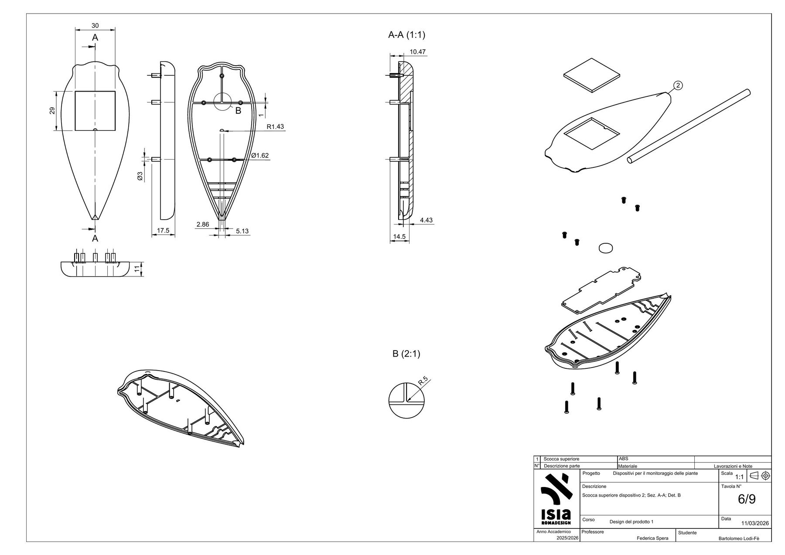
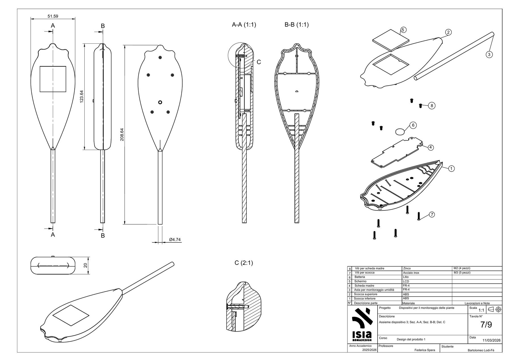

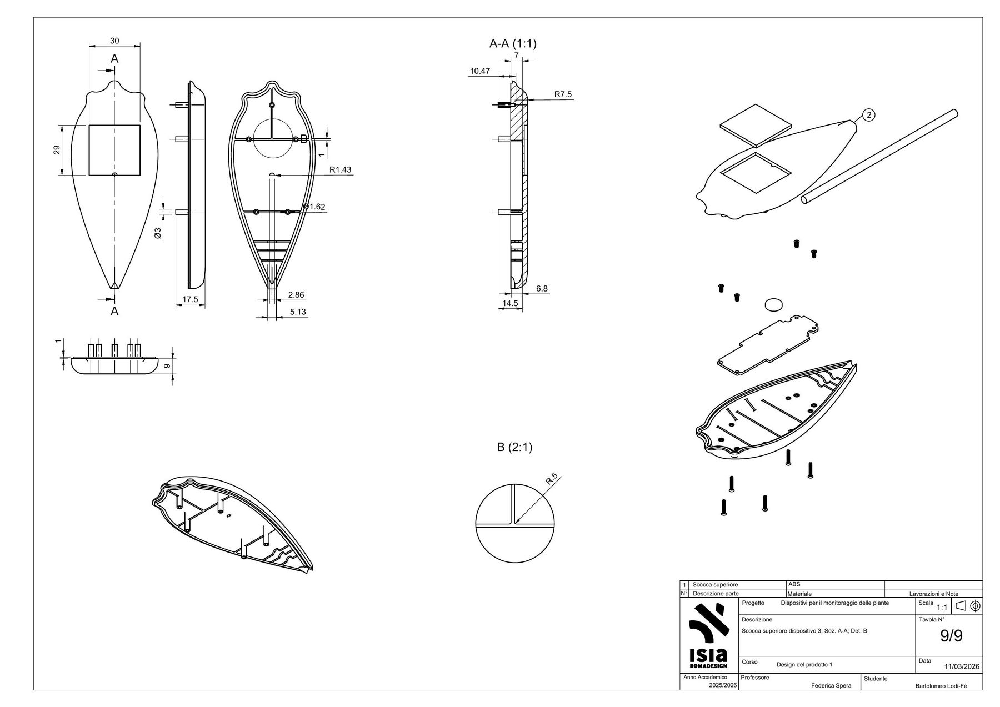